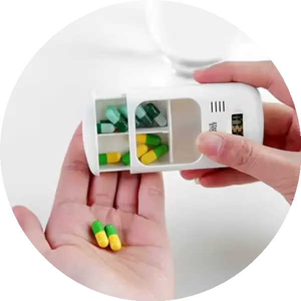

Hizmetlerimiz

İlaç Hatırlatma
İlaçlarınızı zamanında almanız için hatırlatma ve sesli uyarı.

Doktor Görüşmesi
Uzman doktorlarla görüntülü görüşme.

Psikolog & Diyetisyen
Online psikolojik destek ve beslenme danışmanlığı.

Acil Yardım
Düşme algılama ve ambulans çağırma sistemi.

Akıllı Ev
Gaz kaçağı, ışık ve klima kontrolü.

Check-Up
Düzenli sağlık ölçümleri ve raporlama.